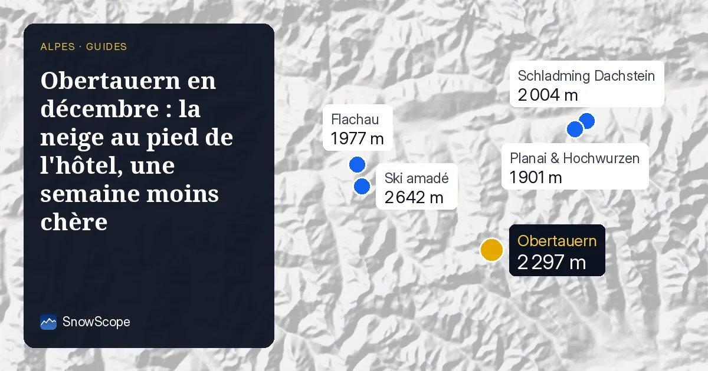

Obertauern en décembre : la neige au pied de l'hôtel, une semaine moins chère
La remontée la plus basse d'Obertauern part à 1628 m : tout le village se trouve là où la neige de décembre tient d'habitude. Dans nos 46 hivers d'historique, la mi-pente avait 30 cm ou plus la semaine du 15 au 21 décembre dans 80 % des hivers, et le forfait 6 jours coûte 331 EUR jusqu'au 25 décembre au lieu de 368 EUR.
Consultez les prévisions neige en temps réel pour Obertauern sur l'application SnowScopeHauteurs de neige, alertes poudreuse et carte 3D, gratuitement.
Le verdict en deux mots
Pour une semaine de ski bon marché en Autriche en décembre sans payer un glacier, Obertauern est la première adresse. Le domaine va de 1628 m à 2297 m, avec 87 km de pistes cartographiées et 28 remontées, et aucune piste de fond de vallée qui dépend de la chance.
Le piège est simple : début décembre n'est pas encore sûr. La première semaine du mois, à peine plus de la moitié de nos hivers (57 %) avaient 30 cm à mi-pente. Réservez la seconde moitié du mois et les chances sont bien meilleures.


Décembre, semaine par semaine
À mi-pente (1962 m), la part des hivers avec 30 cm ou plus monte au fil du mois : 57 % du 1er au 7 décembre, 65 % du 8 au 14, 80 % du 15 au 21 et 85 % la semaine de Noël. Au sommet (2297 m), les mêmes semaines donnent 76, 80, 85 et 91 %.
La hauteur typique à mi-pente passe de 34 cm le 1er décembre à 43 cm le 15 et 62 cm le 31. Une année maigre (1 hiver sur 10), le 15 décembre n'a que 17 cm ; une bonne année, 86 cm. Dans aucun de nos 46 hivers le sol n'était nu au village le 15 décembre.
Un avertissement sur la durée : la moyenne de décembre à mi-pente est passée de 46 cm sur les 15 premiers hivers à 38 cm sur les 15 derniers, et l'hiver dernier n'avait que 18 cm le 15 décembre.
Le prix du forfait
La grille officielle 2026-27 d'Obertauern a deux saisons. Le forfait journée coûte 72 EUR dans les deux. L'économie se fait sur plusieurs jours : 6 jours coûtent 331 EUR en saison B, du 20 novembre au 25 décembre, contre 368 EUR en haute saison.
Une semaine qui se termine avant Noël paie donc le forfait au tarif plus bas de la saison B, pour les mêmes remontées et, la plupart des hivers, assez de neige.
Face au Kitzsteinhorn
Le Kitzsteinhorn, au-dessus de Kaprun, est la réponse classique en décembre : un glacier avec 137 cm au sommet un 15 décembre typique. Mais sa remontée la plus basse est à 765 m, où un 15 décembre typique offre 6 cm, et sa mi-pente (1894 m) ressemble à celle d'Obertauern : 40 cm et 76 % des hivers avec 30 cm la semaine du 15 au 21 décembre.
Côté budget, c'est net : 6 jours au Kitzsteinhorn coûtent 396 EUR en début de saison et 440 EUR en haute saison. La semaine d'avant Noël à Obertauern revient moins cher, et l'on part skis aux pieds de l'hôtel.
Pour qui ?
Les familles et les skieurs moyens qui veulent skier au pied de l'hôtel en décembre pour moins cher. Ceux qui cherchent de la neige profonde attendront la semaine de Noël – 41 % de nos hivers avaient alors 60 cm ou plus à mi-pente – ou viseront plus haut.
Conseils aux skieurs
- Choisissez du 15 au 21 décembre ou plus tard : la chance d'avoir 30 cm à mi-pente passe de 57 % à 80 % par rapport à la première semaine.
- Terminez le forfait 6 jours au plus tard le 25 décembre pour rester en saison B (331 EUR au lieu de 368 EUR).
- Regardez la carte de neige une semaine avant le départ : l'hiver dernier montre qu'un décembre maigre arrive encore.
- Hors-piste après une chute de neige : lisez chaque matin le bulletin d'avalanches du Land de Salzbourg.
Autres cartes (sites externes)
Références et crédits
- Obertauern: official lift-pass prices (2026-27), checked 13 November 2026 www.ski-obertauern.at/en/ski-pass/ski-pass-prices
- Kitzsteinhorn (Kaprun): official lift-pass prices (2026-27), checked 13 November 2026 www.kitzsteinhorn.at/en/tickets-prices/ski-board
À propos de ces chiffres
Chiffres de neige : historique SnowScope, 46 hivers passés (1980-81 à 2025-26) aux altitudes de la station, corrigé de l'altitude (une estimation pour une zone, pas les bulletins de la station) ; « bonne neige » = 30 cm ou plus au sol en moyenne sur la semaine. Carte : notre hauteur habituelle au 15 décembre répartie sur le relief selon l'altitude. Pistes et remontées : cartographie OpenSkiMap. Forfaits : grilles officielles des stations, vérifiées le 13 novembre 2026 ; les prix peuvent changer.
Bulletins d'avalanche officiels: Lawinenwarndienst Salzburg
Citer ce bulletin
Pour la recherche, l'enseignement ou la presse : chiffres et graphiques réutilisables librement sous CC BY 4.0 avec cette citation.
SnowScope (2026), Obertauern en décembre : la neige au pied de l'hôtel, une semaine moins chère, https://snowscope.app/blog/fr/2026/11/obertauern-december-skiing-cheap-snow-sure-pre-christmas.html, consulté le 2026-11-14
SnowScope (Atlas Labs). (2026, November 14). Obertauern en décembre : la neige au pied de l'hôtel, une semaine moins chère. SnowScope snow reports. https://snowscope.app/blog/fr/2026/11/obertauern-december-skiing-cheap-snow-sure-pre-christmas.html
BibTeX
@misc{snowscope2026obertauerndecemberskiing,
author = {{SnowScope (Atlas Labs)}},
title = {Obertauern en décembre : la neige au pied de l'hôtel, une semaine moins chère},
year = {2026},
month = nov,
howpublished = {\url{https://snowscope.app/blog/fr/2026/11/obertauern-december-skiing-cheap-snow-sure-pre-christmas.html}},
note = {Published 2026-11-14 13:29 UTC; accessed 2026-11-14}
}· CC BY 4.0 · Méthodes, données et outils →
Obertauern : neige et température selon l'altitude, cet hiver vs l'hiver dernier (outils) →
Suivre Obertauern
Gratuit : un message quand la neige arrive, et la météo chaque matin.
Autres bulletins neige

Prévision de 79 cm de neige nouvelle aux Grands Montets du 16–18 novembre, principalement au-dessus de 2 000 m d'altitude, selon le modèle de prévision du 15 novembre.

Bonneval-sur-Arc affiche 52 cm en altitude le 8 novembre. Les semaines 10-11 correspondent à la pointe de la saison neigeuse. Découvrez ce qu'il faut emporter selon les prévisions.

Les hauteurs de neige en Alpes sont en retrait par rapport à la normale en début novembre, avec seulement 55 cm dans les meilleures stations au 3 novembre.